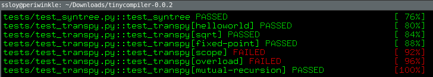
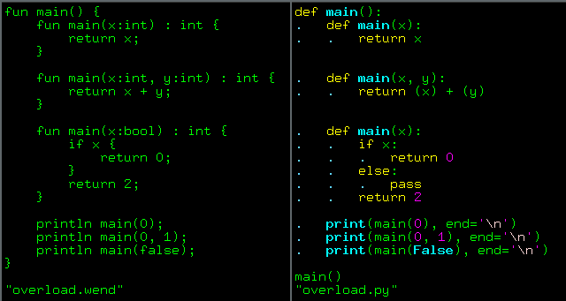
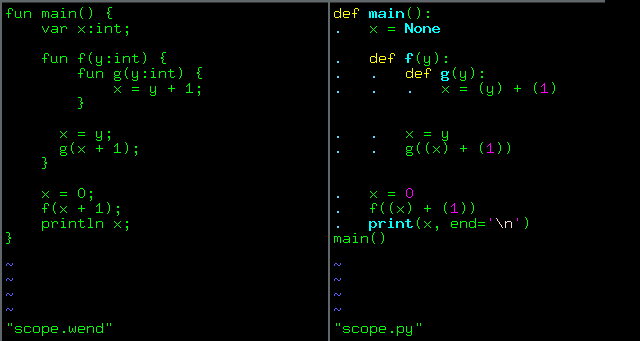
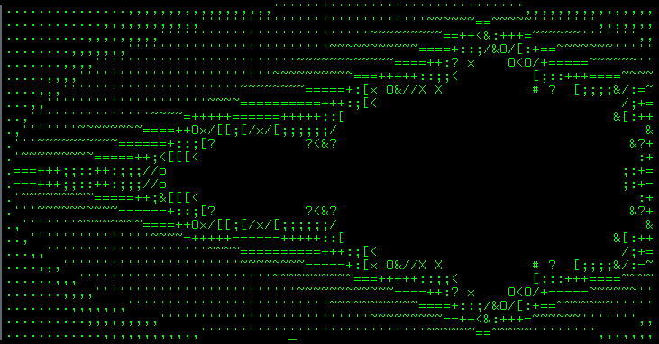

SLY: lexer and parser
Introduction
Parsing is traditionally separated into two stages: lexical analysis and syntactic analysis. However, both are essentially varieties of syntactic analysis, just at different levels. Both processes take a sequence of characters as input and create a higher-level structure.
{kind=link}
This separation is useful because the lexer's job is simpler than the parser's job. The lexer transforms the source text into a flat list of tokens such as "numeric literal", "string literal", "identifier", or "operator". It performs keyword recognition, removes whitespace, and other insignificant symbols.
The parser performs a more complex task - it turns the stream of tokens created by the lexer into a parse tree, which reflects the structure of the language. Separating these two processes allows the parser to work with more orderly and meaningful material than the raw text.
In complex languages, interaction cycles between the lexer and the parser may arise, but it is pretty out of scope for the compiler in a week-end. I chose to build a syntax tree from the source code using an external tool, which is provided with the lexical rules and grammar of the language (this corresponds to the contents of the green and orange boxes in the diagram). Let's take a closer look at each of them.
Spoiler alert
It turned out that it is pretty easy to program a lexer/parser on my own, check two last chapters of this series. However, relying on an external tool allows me to focus on semantic analysis, this is why I keep the description of DIY lexer and parser at the very end of the series.
Lexical Analysis
Lexical analysis is the process of converting a stream of characters into a sequence of tokens. A token is a sequence of characters that forms a lexical unit in the grammar of a language. Intuitively, it can be thought of as a "word" in a human language. To understand these definitions, let's look at the table below:
| Tokens | Token type | Semantic meaning |
|---|---|---|
| if, while, fun, var, return, print | IF, WHILE, FUN, VAR, RETURN, PRINT | Keywords |
| i tmp for23 | ID | Identifier |
| 13,27 | INTVAL | Integer constant |
| (,{,} | LPAREN, BEGIN, END | Symbols |
| %, +, /, = | MOD, PLUS, DIVIDE, ASSIGN | Operators |
For example, consider the following source code:
Our lexer should produce the following sequence of tokens:
Note that the tokens contain information about themselves: the token type and its actual content, so we do not lose a or 2.
We simply broke the input text into words, assigning each word a type (for example, in a human language, it could be a noun, verb, etc.).
How can our lexer do this? In other words, how can we describe and recognize lexemes in a programming language? Let me quote my colleague Hadrien Titeux: "Parsing: what computer scientists solved 40 years ago, but you still can’t do it easily on your own."
Tokens are described using regular expressions and recognized by finite automata.
For example, the following regular expression can be used to identify a valid identifier: [a-zA-Z_][a-zA-Z0-9_]*.
This means we can use alphanumeric characters and underscores.
As usual, the first character cannot be a digit.
And here we immediately run into
Ambiguities
What if we face the following stream of characters?
This can be interpreted in two ways, generating different streams of tokens:
int | a | = | 0 | ; => TYPE(int) ID(a) ASSIGN INTVAL(0) SEMICOLON
inta | = | 0 | ; => ID(inta) ASSIGN INTVAL(0) SEMICOLON
ID or TYPE)? The intuitive solution is to use the rule that matches the most characters in the source code.
In our case, the ID rule will be used because it matches 4 characters (inta), while the int rule matches only 3 characters (int).
However, there is another case of ambiguity that can trick our lexer:
Which token sequence corresponds to above source code?
or Note that even if the above code is syntactically incorrect, we are currently dealing with lexical analysis, not syntactic analysis, so we are not trying to check for syntactic errors at this stage. To solve this problem, we will use rule priority, that is, specify that a certain rule should be applied if two or more regular expressions match the same number of characters in the string.SLY: Lexer
For simplicity (see the previous picture), I am relying on existing tools for creating the syntax tree, namely the Python library SLY. This project is more focused on compilation rather than formal languages, so I'll allow myself this dependency for the moment.
SLY provides two separate classes: Lexer and Parser.
The Lexer class is used to split the input text into a set of tokens defined by a set of regular expression rules.
The Parser class is used to recognize the language syntax defined by a context-free grammar.
These two classes are used together to create a syntax analyzer.
Let's start with the lexer. The description of lexical rules is trivial, so I will provide them for my entire language at once, rather than building them gradually, starting with expression calculators:
WendLexer
To begin with (lines 4-6), we need to define all possible types of tokens (bonus reading: why doesn't NameError occur?). Then (lines 7-8), we ask SLY to ignore whitespace (we're not in Python, after all!), and discard everything from the double slashes to the end of the line. After that, we simply provide a list of all regular expressions corresponding to each token.
Note: the order of these regular expressions is important: first come, first served.
Let's look at the NOT and NOTEQ tokens as an example.
We need to process the NOTEQ rule before the NOT rule, otherwise the sequence of characters a != 0 will be split into tokens ID(a) NOT ASSIGN INTVAL(0), instead of the required ID(a) NOTEQ INTVAL(0).
The second important point is that all reserved words in wend are valid identifiers, and since the ID rule comes first, they will be identified as such.
We could create separate rules for them, but SLY offers a mechanism for reassigning tokens (lines 36-47).
That's it, there's nothing else interesting in the list of lexical rules. The lexer itself takes these rules and creates a finite state machine that processes the entire stream of characters.
SLY: Parser
The parser's job is to take a stream of tokens and verify that the tokens form a valid expression according to the source language specification. This is often done using a context-free grammar, which recursively defines the components of a program.
Thus, the parser must determine whether the language grammar accepts the given stream of tokens, then build a syntax tree and pass it to the other parts of the compiler. Again, I will not dwell on the classifications of grammars and algorithms for processing the token stream, let's leave that for those who want to discuss the theory of formal languages. The only thing we need to know is that we use the simplest. Such a parser makes decisions based on one look-ahead token, without ever returning back.
The grammar of my language is extremely primitive, and writing the corresponding rules for the parser should not be difficult.
Let's look at the code structure, which is enough to parse the expression x = 3+42*(s-t) (check the orange box in the beginning of the article):
Assign statement parser
We inherit from the Parser class and define grammatical rules.
We have two non-terminal symbols: statement, corresponding to the instruction, and expr, corresponding to the expression.
There are only two terminal symbols: INTVAL and ID.
If the parser sees the INTVAL token (lines 30-32), it doesn't look any further and creates an object (syntax tree node) of the Integer class.
If it sees the ID token (lines 26-28), it creates a syntax tree node of the Var class.
Note that in both cases, the expr function is called, meaning that both an integer constant and a variable are trivial expressions.
Similarly, streams of tokens like ID(s) MINUS ID(t) are processed - the parser produces a syntax tree node of type ArithOp with two ID child nodes found by recursion in the parser.
All the rest is pretty similar, the only thing to pay attention to is the operation priority set in lines 7-10.
So far, I gave you one statement only (corresponding to the token sequence ID ASSIGN expr SEMICOLON).
The appropriate grammatical rule is given in lines 12-14, which, when matching such a stream of tokens, creates a syntax tree node of the Assign class.
If you understand this code, here is the complete set of grammatical rules for wend, with no further subtleties, except for converting the unary operation -x into the binary operation 0-x:
complete WendParser
1 2 3 4 5 6 7 8 9 10 11 12 13 14 15 16 17 18 19 20 21 22 23 24 25 26 27 28 29 30 31 32 33 34 35 36 37 38 39 40 41 42 43 44 45 46 47 48 49 50 51 52 53 54 55 56 57 58 59 60 61 62 63 64 65 66 67 68 69 70 71 72 73 74 75 76 77 78 79 80 81 82 83 84 85 86 87 88 89 90 91 92 93 94 95 96 97 98 99 100 101 102 103 104 105 106 107 108 109 110 111 112 113 114 115 116 117 118 119 120 121 122 123 124 125 126 127 128 129 130 131 132 133 134 135 136 137 138 139 140 141 142 143 144 145 146 147 148 149 150 151 152 153 154 155 156 | |
Testing time
The corresponding code is available under the tag v0.0.2 in the repository. I will no longer touch the parser or lexer:
we have a great tool that allows us to automatically create syntax trees from source files in wend.
You can test it by simply running make test, and see that the basic tests pass, but the compiler fails two tests:

I remind you that the compiler is currently just a pretty print layer over the lexer and parser, and it outputs Python code. Let's take a closer look at the failed tests, showing the wend source code and the compiled Python code side by side:

Python is a very powerful language, it can do much more than wend, and my pretty print just dumbly repeats the structure of the source code.
The only thing Python can't do out of the box is function overloading.
Therefore, it is quite expected to dislike four different main functions,
it even refuses to compile (I'm talking about the compilation by the Python interpreter of the output from my compiler).
But this one is a bit more interesting:

This Python code runs nice, but it prints 0 to the screen, while the expected output of my code is 3. And this is the topic of our next discussion, namely, variable scopes and symbol tables. In other words, we will move from lexical and syntactic analysis to semantic analysis.
But let's end on a positive note, here is a program in wend that allows you to display the Mandelbrot set:
Mandelbrot.wend
And here is the result of its execution:

We are starting to encounter wend code for which it would be very cumbersome to build syntax trees manually, so having a parser is great!